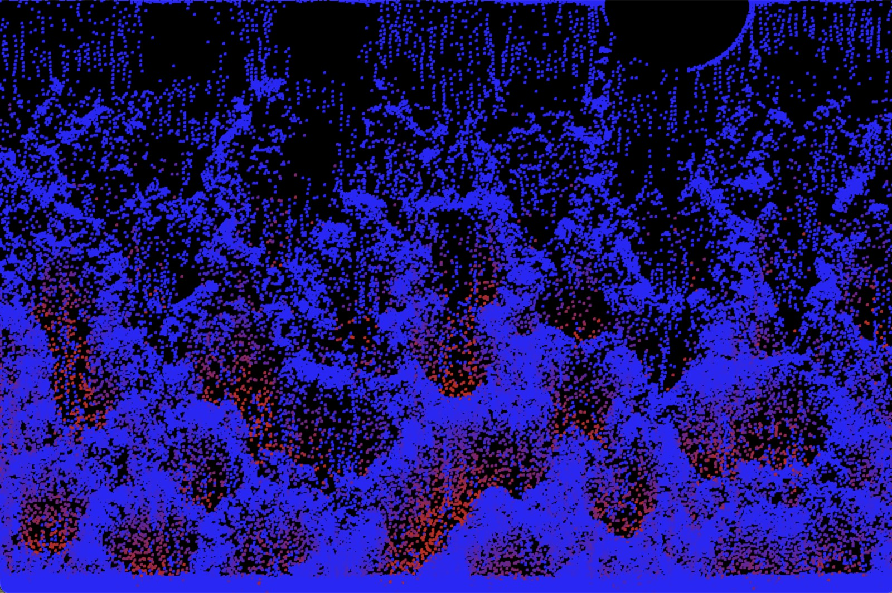

Physics Simulation
A real-time demonstration of classical mechanics in software. Thousands of particles fall, collide and settle under a few physical rules, behaving like liquid, sand, gas or stone.

Overview
This is a small physics sandbox. Every particle is a point mass with a radius, and everything on screen comes from a handful of rules: forces change velocity, velocity changes position, and particles that overlap push each other apart.
Change those rules per material and the same particles pour like water, pile like sand or drift like gas. The interesting part is not any single rule but how much behaviour emerges when thousands of particles follow them at once.
Motion
Each particle's state advances with semi-implicit Euler integration: velocity is updated from the net force first, and the new velocity is used to move the particle.
\[ \mathbf{v}_{t+\Delta t} = \mathbf{v}_t + \frac{\mathbf{F}_t}{m}\,\Delta t \qquad \mathbf{p}_{t+\Delta t} = \mathbf{p}_t + \mathbf{v}_{t+\Delta t}\,\Delta t \]
Updating velocity before position keeps energy from drifting upward the way plain Euler does. Each frame is also split into four smaller sub-steps, so fast particles and dense piles stay stable instead of tunnelling through each other or exploding apart.
Collisions
Detecting contact
Two particles touch when the distance between their centres is less than the sum of their radii. Comparing squared distances avoids a square root for every pair that isn't touching:
\[ (x_2 - x_1)^2 + (y_2 - y_1)^2 < (r_1 + r_2)^2 \]
Responding to contact
Overlapping particles are first pushed apart along the line between their centres, with the lighter particle moving further. Their velocities then exchange an impulse along that same normal:
\[ j = \frac{-(1 + e)\,(\mathbf{v}_{\text{rel}} \cdot \hat{\mathbf{n}})}{1/m_1 + 1/m_2} \]
The coefficient of restitution e sets how much energy survives a collision: 0.4 between particles, so piles settle, and 0.85 against the walls. A friction term (μ = 0.1) resists sliding along the contact, which is what lets sand hold a slope.
Materials
Five materials share the same equations and differ only in their parameters:
- Liquid flows and levels out, with cohesion holding it together.
- Sand uses friction to form piles with a natural angle of repose.
- Gas is buoyant and drifts upward, spreading to fill the space.
- Stone has infinite mass, so it never moves and everything else collides with it.
- Default particles are plain elastic spheres, a baseline to compare the others against.
Computing it in real time
Checking every particle against every other particle grows with the square of the count. Dividing the world into a grid means each particle only checks its immediate neighbours, which keeps the cost close to linear. With the work also spread across every CPU core, the simulation holds 60 frames per second with thousands of particles on screen.